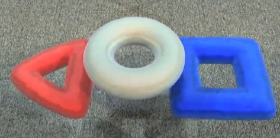

LOGO MOTION™ is played by two competing alliances on a flat 27’ x 54’ foot field. Each alliance consists of three robots. They compete to hang as many inflated plastic shapes (triangles, circles, and squares) on their grids as they can during a 2 minute and 15 second match. The higher the teams hang their game pieces on their scoring grid, the more points their alliance receives.
The match begins with one 15-second Autonomous Period in which robots operate independently of driver inputs and must hang Ubertubes to score extra points. For the rest of the match, drivers control robots and try to maximize their alliance score by hanging as many logo pieces as possible. Any logo piece hung on the same peg as an Ubertube receives double points. If teams assemble the logo pieces on their scoring grids to form the FIRST® logo (triangle, circle, square, in a horizontal row in that order), the points for the entire row are doubled.
The match ends with robots deploying minibots, small electro-mechanical assemblies that are independent of the host robot, onto vertical poles. The minibots race to the top of the pole to trigger a sensor and earn additional bonus points.
The match begins with one 15-second Autonomous Period in which robots operate independently of driver inputs and must hang Ubertubes to score extra points. For the rest of the match, drivers control robots and try to maximize their alliance score by hanging as many logo pieces as possible. Any logo piece hung on the same peg as an Ubertube receives double points. If teams assemble the logo pieces on their scoring grids to form the FIRST logo (triangle, circle, square, in a horizontal row in that order), the points for the entire row are doubled.
Teleoperated
At the beginning of the TELEOPERATED PERIOD the OPERATOR CONSOLE controls are activated and DRIVERS may remotely control their HOSTBOTS. The DRIVERS continue to teleoperate their HOSTBOTS for the remainder of the MATCH. The TELEOPERATED PERIOD ends when the arena timer displays zero seconds. This also indicates the end of the MATCH.
 The pictures above show the three tubes that are used in this year's game, this includes a triangle, square, and a circle. This represents the US First logo.